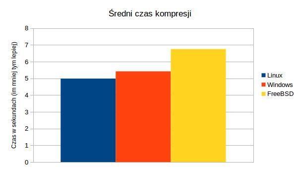
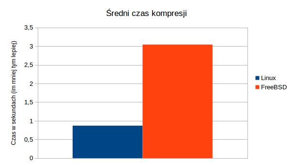

Lame
Wstęp
Test ten pozwala zmierzyć wydajność kompresji plików audio w formacie wav do formatu mp3
Procedura testowa
Testy przeprowadzano programem lame w wersji 3.99.5 na pliku http://al.wor.free.fr/cd/2_13-wav.htm z opcją -V2 (wysoka jakość). Mierzony jest czas kompresji. Im mniejszy czas kompresji, tym lepiej
Wynik dla systemu Linux
Tabela - wyniki ogólne
| Czas kompresji (w sekundach) | |
|---|---|
| Średnia arytmetyczna | 4,985 |
| Odchylenie standardowe | 0,100 |
| Wartość maksymalna | 5,137 |
| Wartość minimalna | 4,895 |
Tabela - wyniki szczegółowe
| Czas kompresji (w sekundach) | |
|---|---|
| labc192 | 5,137 |
| labc193 | 4,911 |
| labc194 | 4,950 |
| labc195 | 5,034 |
| labc197 | - |
| labc198 | - |
| labc199 | 4,895 |
Podsumowanie
Najlepiej z zadaniem poradził sobie komputer labc199 uzyskując czas 4,895s. Najgorzej poradził sobie komputer labc192 uzyskując czas 5,137s. Różnice te są jednak małe (niskie odchylenie standardowe) i można przyjąć, że wszystkie komputery poradziły sobie z zadaniem róznie dobrze.
Wynik dla systemu Windows
Tabela - wyniki ogólne
| Czas kompresji (w sekundach) | |
|---|---|
| Średnia arytmetyczna | 5,4215 |
| Odchylenie standardowe | 0,051 |
| Wartość maksymalna | 5,475 |
| Wartość minimalna | 5,356 |
Tabela - wyniki szczegółowe
| Czas kompresji (w sekundach) | |
|---|---|
| labc192 | 5,394 |
| labc193 | 5,465 |
| labc194 | 5,475 |
| labc195 | 5,381 |
| labc197 | - |
| labc198 | 5,458 |
| labc199 | 5,356 |
Podsumowanie
Najlepiej z zadaniem poradził sobie komputer labc199 uzyskując czas 5,356s. Najgorzej poradził sobie komputer labc192 uzyskując czas 5,475s. Różnice te są jednak małe i można przyjąć, że wszystkie komputery poradziły sobie z zadaniem róznie dobrze
Wynik dla systemu FreeBSD
Tabela - wyniki ogólne
| Czas kompresji (w sekundach) | |
|---|---|
| Średnia arytmetyczna | 6,750 |
| Odchylenie standardowe | 0,888 |
| Wartość maksymalna | 7,779 |
| Wartość minimalna | 5,987 |
Tabela - wyniki szczegółowe
| Czas kompresji (w sekundach) | |
|---|---|
| labc192 | 5,987 |
| labc193 | 6,102 |
| labc194 | 6,002 |
| labc195 | 6,069 |
| labc197 | 7,628 |
| labc198 | 7,779 |
| labc199 | 7,685 |
Podsumowanie
Najlepiej z zadaniem poradził sobie komputer labc192 uzyskując czas 5,987s. Najgorzej poradził sobie komputer labc198 uzyskując czas 7,779s. Różnice te są całkiem spore (odchylenie wynosi prawie 0,9s) i w przypadku większych plików te różnice będą się powiększać.
Podsumowanie kilku systemów
Poniżej zostały przedstawiony wykres średniego czasu kompresji w zależności od użytego systemu operacyjnego na danej maszynie.

Jak widać najlepsze czasy kompresji uzyskano na systemie Linux. Zaraz za nim plasuje się system Windows. Najgorzej wypadł zaś system FreeBSD.
Flac
Wstęp
Test ten pozwala zmierzyć wydajność kompresji plików audio w formacie wav do formatu flac
Procedura testowa
Testy przeprowadzano programem flac w wersji 1.3.1 na pliku http://al.wor.free.fr/cd/2_13-wav.htm. Mierzony jest czas kompresji. Im mniejszy czas kompresji, tym lepiej
Wynik dla systemu Linux
Tabela - wyniki ogólne
| Czas kompresji (w sekundach) | |
|---|---|
| Średnia arytmetyczna | 1,523 |
| Odchylenie standardowe | 0,052 |
| Wartość maksymalna | 1,622 |
| Wartość minimalna | 1,501 |
Tabela - wyniki szczegółowe
| Czas kompresji (w sekundach) | |
|---|---|
| labc192 | 1,506 |
| labc193 | 1,510 |
| labc194 | 1,622 |
| labc195 | 1,507 |
| labc197 | - |
| labc198 | - |
| labc199 | 1,501 |
Podsumowanie
Najlepiej z zadaniem poradził sobie komputer labc199 uzyskując czas 1,501s. Najgorzej poradził sobie komputer labc194 uzyskując czas 1,622s. Różnice te są jednak małe (niskie odchylenie standardowe) i można przyjąć, że wszystkie komputery poradziły sobie z zadaniem róznie dobrze.
x264
Wstęp
Test ten pozwala zmierzyć wydajność kompresji plików wideo w formacie y4m do formatu mkv
Procedura testowa
Testy przeprowadzano programem x264 w wersji 0.148.x na pliku https://media.xiph.org/video/derf/y4m/football_422_ntsc.y4m. Mierzony jest czas kompresji. Im mniejszy czas kompresji, tym lepiej
Wynik dla systemu Linux
Tabela - wyniki ogólne
| Czas kompresji (w sekundach) | |
|---|---|
| Średnia arytmetyczna | 5,9608 |
| Odchylenie standardowe | 0,161 |
| Wartość maksymalna | 6,179 |
| Wartość minimalna | 5,765 |
Tabela - wyniki szczegółowe
| Czas kompresji (w sekundach) | |
|---|---|
| labc192 | 5,765 |
| labc193 | 5,848 |
| labc194 | 6,179 |
| labc195 | 6,027 |
| labc197 | - |
| labc198 | - |
| labc199 | 5,985 |
Podsumowanie
Najlepiej z zadaniem poradził sobie komputer labc192 uzyskując czas 5,765s. Najgorzej poradził sobie komputer labc194 uzyskując czas 6,179s. Różnice te są jednak małe (niskie odchylenie standardowe) i można przyjąć, że wszystkie komputery poradziły sobie z zadaniem róznie dobrze.
Ffmpeg
Wstęp
Test ten pozwala zmierzyć wydajność kompresji plików wideo w formacie y4m do formatu avi
Procedura testowa
Testy przeprowadzano programem ffmpeg w wersji 2.8.1 na pliku https://media.xiph.org/video/derf/y4m/football_422_ntsc.y4m. Mierzony jest czas kompresji. Im mniejszy czas kompresji, tym lepiej
Wynik dla systemu Linux
Tabela - wyniki ogólne
| Czas kompresji (w sekundach) | |
|---|---|
| Średnia arytmetyczna | 0,903 |
| Odchylenie standardowe | 0,293 |
| Wartość maksymalna | 1,426 |
| Wartość minimalna | 0,729 |
Tabela - wyniki szczegółowe
| Czas kompresji (w sekundach) | |
|---|---|
| labc192 | 0,729 |
| labc193 | 0,782 |
| labc194 | 1,426 |
| labc195 | 0,789 |
| labc197 | - |
| labc198 | - |
| labc199 | 0,790 |
Podsumowanie
Najlepiej z zadaniem poradził sobie komputer labc192 uzyskując czas 0,729s. Najgorzej poradził sobie komputer labc194 uzyskując czas 1,426s. Można zauważyć, że prócz komputera labc194 wsystkie maszyny osiągnęły czasy poniżej 0,8s.
Wynik dla systemu FreeBSD
Tabela - wyniki ogólne
| Czas kompresji (w sekundach) | |
|---|---|
| Średnia arytmetyczna | 3,04 |
| Odchylenie standardowe | 2,66 |
| Wartość maksymalna | 7,685 |
| Wartość minimalna | 0,934 |
Tabela - wyniki szczegółowe
| Czas kompresji (w sekundach) | |
|---|---|
| labc192 | 1,046 |
| labc193 | 1,114 |
| labc194 | 0,934 |
| labc195 | 1,172 |
| labc197 | 4,754 |
| labc198 | 4,598 |
| labc199 | 7,685 |
Podsumowanie
Najlepiej z zadaniem poradził sobie komputer labc194 uzyskując czas 0,934s. Najgorzej poradził sobie komputer labc199 uzyskując czas 7,685s. Warto tutaj wyszczególnić trzy wyraźnie różniące się od siebie grupy komputerów. Komputery labc192-labc195 osiągnęły wyniki oscylujące w granicach 1s. Ponad cztery dłużej razy to samo zadanie wykonywały komputery labc197 i labc198. Komputer labc199 potrzebował na to samo zadanie ponad siedem razy więcej czasu niż najlepsza grupa. Tak duże zróżnicowanie wyników powoduje, że uzyskane wyniki mogą być niemiarodajne.
Podsumowanie kilku systemów
Poniżej zostały przedstawiony wykres średniego czasu kompresji w zależności od użytego systemu operacyjnego na danej maszynie.

Jak widać najlepsze czasy kompresji uzyskano na systemie Linux. System FreeBSD uzyskał trzykrotnie gorszy rezultat.